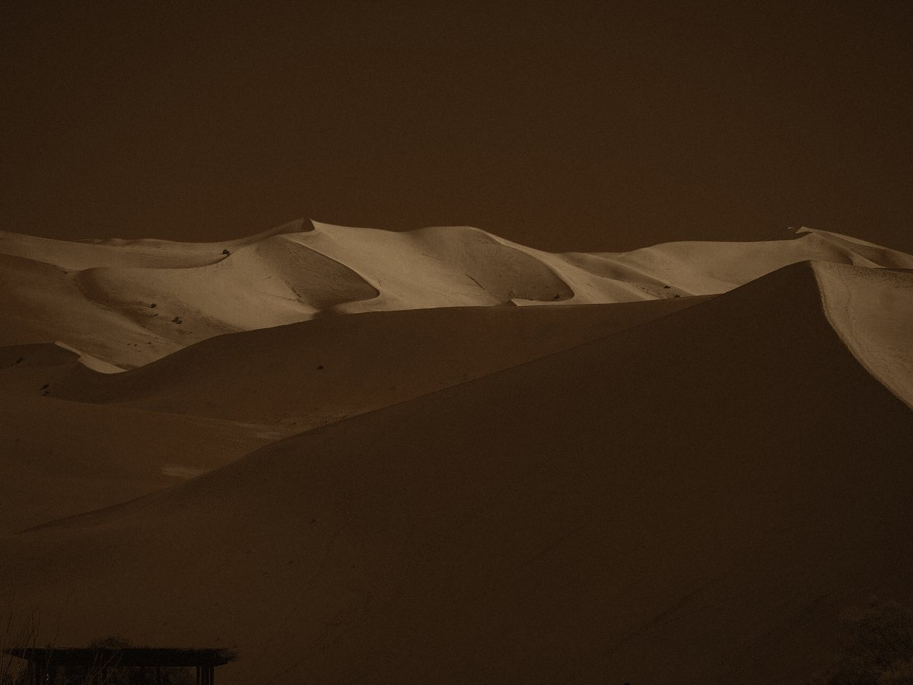
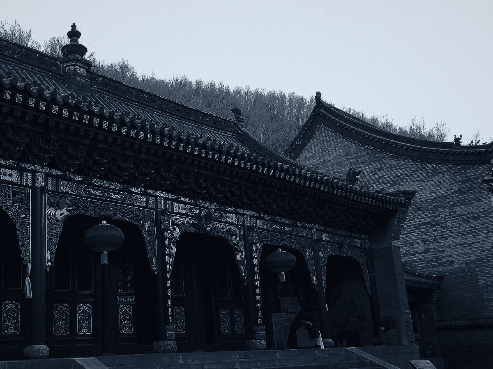
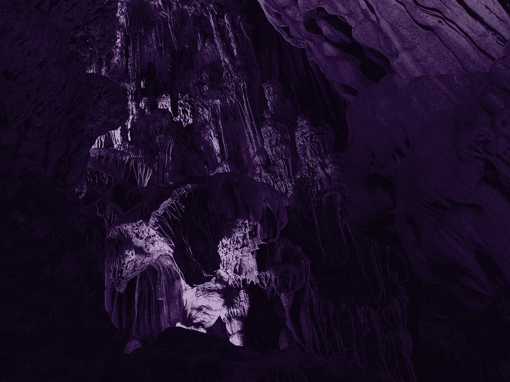
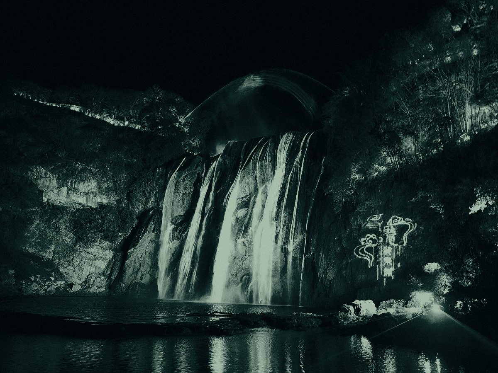

第一回
火照黑云
黑风山 · 观音禅院
山火过后，黑风山的松林只剩焦黑的骨架。观音禅院的塔还立着，塔里的香却早断了。黑熊精守着这处旧道场，把偷来的袈裟供在佛前，像供着一件并不属于他的体面。
这一回要看的，是「贪」：贪一件袈裟，贪一炉香火，贪一个本该属于自己的位置。打败黑熊精不难，难的是看懂他为什么不肯走。
翻阅这一回的影神图 →山一程，水一程。六个地方，六段旧因果，六根散落的根器。你一路打过去，也一路看过去。
黑风山 · 观音禅院
山火过后，黑风山的松林只剩焦黑的骨架。观音禅院的塔还立着，塔里的香却早断了。黑熊精守着这处旧道场，把偷来的袈裟供在佛前，像供着一件并不属于他的体面。
这一回要看的，是「贪」：贪一件袈裟，贪一炉香火，贪一个本该属于自己的位置。打败黑熊精不难，难的是看懂他为什么不肯走。
翻阅这一回的影神图 →
黄风岭 · 卧虎寺
黄风岭的风带着沙，吹得人睁不开眼。黄风大圣躲在风眼里，用一口三昧神风把整座山变成他的道场；虎先锋守着卧虎寺，等一个能接住他刀的人。
风是遮掩，也是借口。吹散别人的视线，也吹散自己的退路。等风停了，谁都得面对自己。
翻阅这一回的影神图 →
小西天 · 浮屠界
小西天终年落雪。佛殿的屋檐压着厚厚一层白，像一句没有说完的偈语。黄眉在这里自立为佛，用金铙与人种袋收人，也用人情与道理收心。
他讲「众生皆苦」，却把众生装进袋里；他讲「极乐」，却让极乐变成一座走不出的牢。这一回要破的，是「痴」。
翻阅这一回的影神图 →
盘丝岭 · 盘丝洞
盘丝岭的雾是紫色的，像一层化不开的胭脂。洞里蛛网密布，网上挂着人，也挂着妖。百眼魔君在深处睁着满身金眼，紫蛛儿在洞口等一个不会再回来的人。
情爱、执念、亏欠，缠成一张网。越想挣脱，越被缠紧。这一回要解的，是「爱别离」。
翻阅这一回的影神图 →
火焰山 · 翠云山
火焰山的火终年不熄，红得像天边烧穿的洞。牛魔王守着山，铁扇公主守着扇子，红孩儿守着一身烧不尽的火。一家人，各自守着一句说不出口的话。
火能伤人，也能照见人。红孩儿恨的不是父亲，是自己生来就带着的火。这一回要熄的，是「嗔」。
翻阅这一回的影神图 →
花果山 · 水帘洞
走遍六回，最后回到花果山。水帘洞前桃花照旧，瀑布照旧，只是那只曾经大闹天宫的猴子，只剩一副残躯。
你集齐六根，不是为了复活他，而是为了回答一个问题：如果天命注定，你还走不走这一趟？这一回没有敌人，只有你自己。
翻阅这一回的影神图 →Six Roots · 六根
佛家说「六根」是眼、耳、鼻、舌、身、意，是人与世界相接的六扇门。门开得太大，烦恼就进来；门关得太死，人也活不成。游戏把六根拆成六回，让你一扇一扇地推开。
你看见了众生的苦，也看见了自己的怕。
黑风山风里有谎话，也有真话，看你信哪一个。
黄风岭香火气、霉味、雪的味道，都是人间的味道。
小西天甜言蜜语最苦，缠人的情分最难咽。
盘丝岭火烫、刀冷、心跳，身体比脑子先知道疼。
火焰山六根归处，是「我」，还是「他」？
花果山